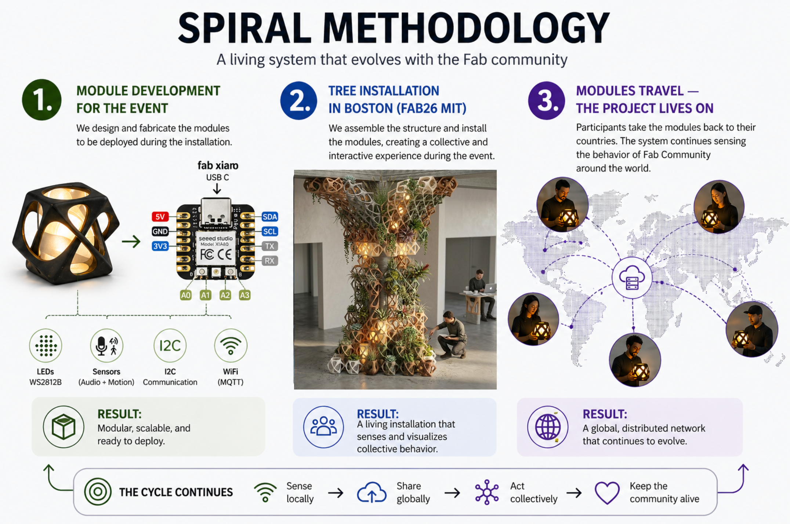
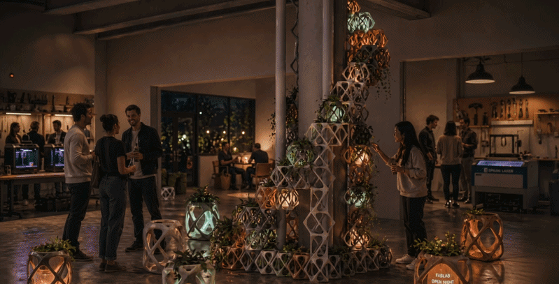

Summary
Fab Vine is an open-source project from the Fab Lab community. It does not belong to ZOI or to any single organization or person. The installation is designed for Fab26 at MIT and aims to connect the human, digital, and territorial energy of the community through a tree-inspired structure made of addressable light points that react as part of a collective system.
The system uses sensing modules called Fab Leaf Nodes, distributed across different spaces to capture local activity such as sound and movement. These signals are integrated with digital interactions from the event website and social media.
How It Works
Data travels through a dedicated network into a central swarm engine. This engine processes the information and translates it into dynamic light behaviors within a structure of individually addressable LEDs.
Purpose
Fab Vine makes the collective life of the Fab Lab network visible: its meetings, conversations, movement, collaboration, and digital presence become an open, shared, and replicable experience.
Scalability
The nodes can operate independently or as part of the network. After the event, participants can take them back to their labs so the system continues evolving globally.
Open Collaboration
Fab Vine is being developed with participation from Fabio López, Sherry Lassiter, Neil Gershenfeld, Roberto Gallo, ZOI, and other community collaborators. As an open-source initiative, it will recognize all collaborators who participate in the event, making their contribution visible within the experience and its global continuity.
Project Visuals

